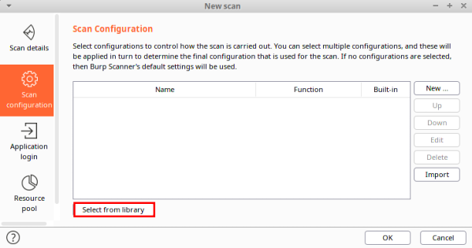
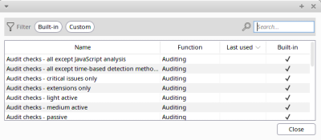
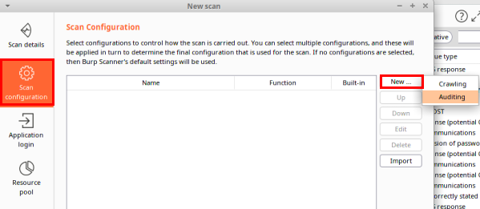
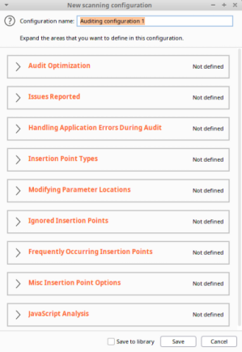

Scan Configuration
Scan Configuration
Though oftentimes we will employ a prebuilt configuration from the library, Burp also allows us to create an ad hoc scan configured to our particular need.
•
Select from Library Burp's configuration library provides numerous predefined configs for scanning or crawling
 •
New Manual Configuration   Issues Reported The Issues Reported portion of the configuration is very commonly used. This section of the configuration allows for including or excluding specific classes of flaws individually.
It also allows higher level configurations via scan types: Passive, Light active, Medium active, Intrusive active, and JavaScript analysis.